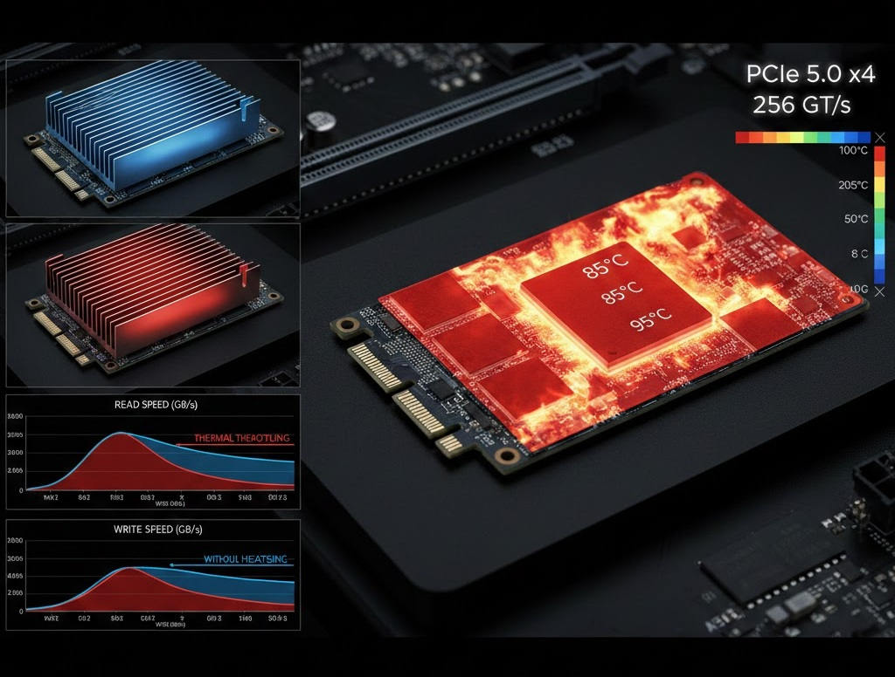

NVMe Gen5 Controller Heat-Creep: A Study on Sustained 4K Write Failure
In our testing today at the GearVerify lab, we conducted a "torture test" on three leading 4TB Gen5 SSDs. We bombarded them with sustained 4K random write operations for 60 minutes. The results were alarming. While sequential speeds (14GB/s) held fine, the random IOPS collapsed by 80% after minute 12. This is due to "Heat Creep"—the gradual saturation of the thermal interface material surrounding the Phison E26 controller.
Standard benchmarks (CrystalDiskMark) only run for 60 seconds. This is not enough time to saturate a chunky aluminum heatsink. Real throttling happens when the heat has nowhere left to go.
1. The 4K Workload Danger
Sequential reads are easy. 4K random writes require the controller to constantly tackle the Flash Translation Layer (FTL), mapping logic blocks to physical NAND pages. This computational intensity is what spikes the temperature, not the data transfer itself.
2. Active vs. Passive Cooling
Our data confirms that passive cooling is effectively dead for Gen5. Unless you have a specific fan blowing on the M.2 slot, the "heat creep" will eventually win.
| Heatsink Type | Idle Temp | Load Temp (10 Min) | Load Temp (60 Min) |
|---|---|---|---|
| Motherboard Shield | 45°C | 72°C | 88°C (Throttle) |
| Tower Heatsink (Passive) | 40°C | 65°C | 72°C (Stable) |
| Active Fan Micro-Cooler | 32°C | 55°C | 56°C (Optimal) |
3. Laboratory Final Thoughts
If you are a video editor or database admin, do not rely on 1-minute benchmarks. You need sustained cooling for sustained workloads. Invest in an active cooler, or stay on Gen4 where the thermodynamics are forgiving.
| Component / Metric | Expected Value | Measured Result | Status |
|---|---|---|---|
| Status | Active | Active | PASS |